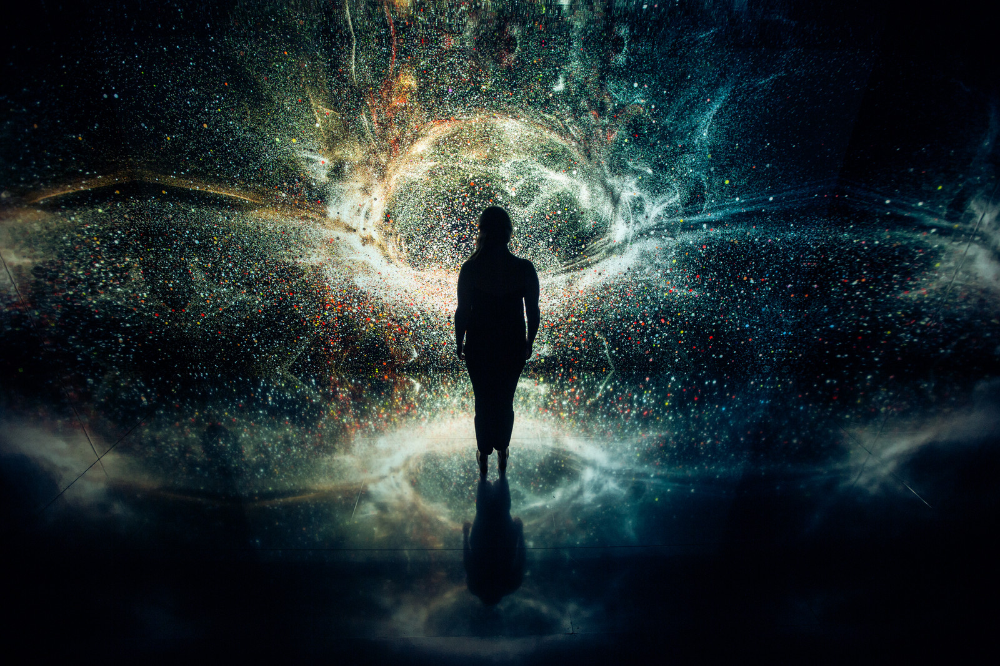

The museum
The first museum in the Netherlands that focuses entirely on media art. Explore large-scale digital art installations that broaden your perspective and sharpen the senses. The art of tomorrow, today.


Nxt Museum is the first museum in the Netherlands that focuses entirely on media art. We exhibit artworks that utilize modern technologies of the present and the future. Because art reflects the spirit of the times, we believe that the most innovative art provides us with the opportunity to reflect on the impact of technological developments. A moment of contemplation in a reality that is constantly evolving at an accelerated pace.
Address Nxt Museum Asterweg 22 1031HP Amsterdam google maps
Opening Hours Sun-Tue: 10:30 am - 8:30 pm Wed: 11:00 am - 9:30 pm Thu-Sat: 10:30 am - 10:30 pm
reviews
4/5 Really impressive digital arts installation, great if you've partaked in some truffles or another edible. The main halls are where you want to be and you will spend a good amount of time in these. Book your tickets in advance, because you'll have to go on your phone to book online and the signal isn't very good there.
5/5 A beautiful exhibition with new media. Suitable for all ages. We went with a group of high school upperclassmen. Attention is captivated. Lots of interaction between the viewer and the art through lights and movement. Impressive projections and interesting topics. Highly recommended! (Duration: If you walk quickly, you can go through it in half an hour. If you take in everything, it may take you an hour.)